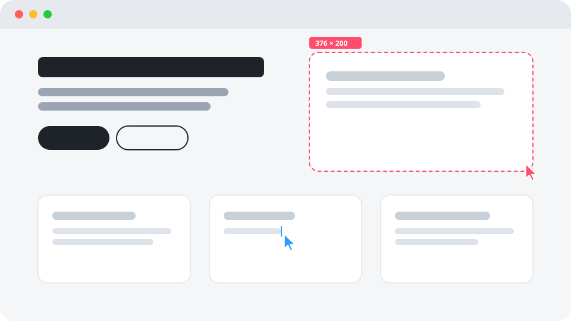

Layout & Grid
Drag out a selection box with live width × height and alignment guides, then drop the panel in.
buildcursors · one file · zero dependencies
Coloured cursor "agents" drag selection boxes, type your text line by line and carry your images in, right as visitors scroll. Add one script tag to any HTML page.

Your real page is already rendered underneath. Parts that haven't been built yet are invisible but keep their space, so nothing jumps around.
Drag out a selection box with live width × height and alignment guides, then drop the panel in.
Type your text out line by line, caret and all, following its real line breaks.
Flies off-screen, grabs your images and carries them into their frames.
Helps wherever there's a backlog. When the whole page is done, the crew lines up, hops and leaves.
Put it in the <head>, without defer or async, so unbuilt parts are hidden before the first paint.
<script src="https://cdn.jsdelivr.net/gh/giovaniolivr/buildcursors@1/buildcursors.min.js"></script>That's it. Headings, paragraphs, list items, images, figures, tables and articles get built by default. To choose what gets built, pass a selector:
<script src=".../buildcursors.min.js"
data-targets="h1, p, .card, img"
data-cooldown="1h"></script>Or mark elements in your HTML: data-build="block", data-build="text", or data-build="skip" to leave one alone.
Set them as data-* attributes on the script tag, or in a window.buildcursorsConfig object defined before it (needed for agents, onStart and onDone).
| Attribute | Default | What it does |
|---|---|---|
data-targets | headings, p, li, img, figure… | CSS selector of what gets built. Matches nested inside another match come along with it. |
data-text | headings, p, li, blockquote… | Which elements are typed out instead of boxed. |
data-keep | button, .btn | Text inside these arrives with its panel instead of being typed. |
data-ignore | none | Never hidden, never built. |
data-cooldown | 10m | Play at most once per period per browser (30s, 10m, 2h, 1d). 0 plays every visit. |
data-speed | 1.7 | Animation speed. It also speeds up on its own when the visitor scrolls fast. |
data-names | true | Show the name labels next to the cursors. |
data-finale | true | Line up, hop and leave when everything is built. |
data-mobile-agents | Layout,Copy,Media,QA | Smaller crew on narrow screens, or all. |
data-replay-link | none | Selector of an element to append a "watch it build" button to. |
Anything the visitor scrolls past just appears, so nobody waits on a cursor.
Visitors who ask their system for less motion, and automated browsers, always get the plain page.
Esc builds everything at once, and focused elements appear instantly for keyboard users.
Add ?build=1 to the URL to force a run, or ?build=0 to turn it off.